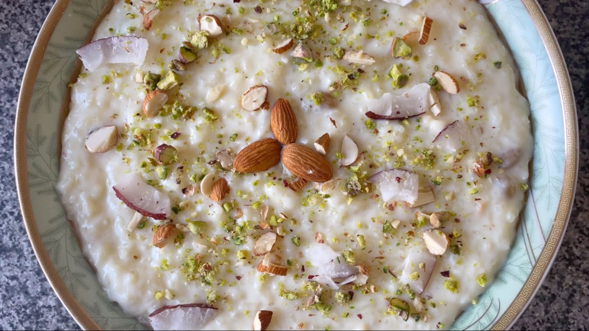

Pakistani Kheer

Description
A sweet, fragrant rice pudding that satisifes your sweet tooth and also offers a reprieve after a spicy dish!
A labour of love for sure as easy as it is to cook, it does take a bit of time; all is fair I say, and worth it :D
Ingredients
-
1/3 cup soaked basmati rice
-
1/2 cup sugar
-
1/4 cup water
-
5 cups whole milk
-
5 or 6 caradamom pods
-
1/2 tbsp crushed pistachios
-
1/2 tbsp almond silvers
-
3 - 4 drops Kewra food flavour (rose water is also A-OK)
-
crushed pistachio and almonds, for garnish
Steps
-
Add water and milk in a heavy-bottomed pot, and let it simmer.
-
Once boiling, add in the drained soaked rice (you can soak the rice for about 30 minutes).
-
Gradually add in the sugar and keep stirring.
-
Wait for the milk to get concentrated (it gets a bit yellow) and crush the cardamom seeds in a powder-like texture and add it.
-
Add the almonds and pistachios, and keep cooking until the rice gets soft enough to get easily mushed by your fingers.
-
Add the kewra/rose water food flavour.
-
Lightly blend the rice pudding mixture with a blender to better incoportate the rice and milk, and to thicken the mixture, don't blend it to a paste-like consistency but more of a gritty texture.
-
Turn the heat to low, and let it cook until it thickens to however you prefer.
-
Turn off the heat, and let it cool.
- Add the garnish for an extra crunch!
-
Serve it in bowls and boom! done! Wipe the sweat off your forehead and pat yourself on the back. You've done it!